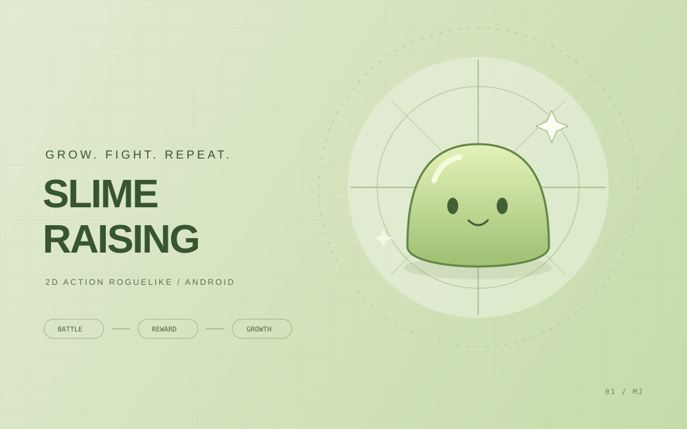

구현 이력
캐릭터·전투
플레이어 조작, 공격·피격 처리, 몬스터 AI를 구현했습니다.
PROJECT 01 / Slime Raising
몬스터를 처치하고, 스킬을 조합하고, 더 강한 슬라임으로 성장합니다. 매번의 전투와 영구 성장을 연결한 모바일 로그라이크 RPG입니다.

핵심 시스템 구현 이력을 소개합니다. 스토어 출시 여부와 배포 빌드는 아직 확인되지 않았습니다.
01 / GAME OVERVIEW
지속적으로 등장하는 몬스터를 처치해 경험치를 얻고, 무작위로 제공되는 액티브 스킬과 패시브 능력을 조합합니다. 웨이브·라운드별 전투와 이벤트, 보스전을 거쳐 얻은 보상은 다음 플레이를 위한 영구 성장으로 이어집니다.
02 / GAMEPLAY
플레이 스크린샷을 정리한 뒤 이곳에 추가할 예정입니다.
확인된 플레이 영상 링크가 아직 없습니다.
03 / MY CONTRIBUTIONS
공개 프로젝트 README에 기재된 단독 개발 범위입니다. AI 활용 여부와 작업별 분담은 이 프로젝트 자료에서 확인되지 않았습니다.
플레이어 조작, 공격·피격 처리, 몬스터 AI를 구현했습니다.
액티브 스킬, 패시브 능력, 영구 능력 강화를 구현했습니다.
웨이브, 라운드, 이벤트, 보스 전투를 하나의 진행 흐름으로 연결했습니다.
UI 애니메이션, 사운드 설정, 한국어·영어 로컬라이제이션과 사용자 정보 저장을 구현했습니다.
04 / CORE SYSTEMS
공개 README 기반 플레이 흐름 · 클래스 구조도 아님
캐릭터·전투·스킬·게임 진행을 기능별로 나눠 유지보수를 고려했습니다.
게임 데이터를 ScriptableObject로 관리하는 구조를 적용했습니다.
오브젝트 풀링을 적용해 리소스 관리를 고려했습니다. 성능 측정 수치는 공개 자료에 없습니다.
실제 클래스 관계와 상세 데이터 흐름은 공개 가능한 기술 문서를 확인한 뒤 추가합니다.
05 / DEVELOPMENT & PROBLEM SOLVING
06 / TESTING & CURRENT STATE
공개 README에서 기능 구현 범위와 게임 진행 흐름을 확인했습니다. 기기별 플레이 테스트 결과, 자동화 테스트 로그, 성능 측정 자료는 아직 제공되지 않았습니다.
07 / PROJECT RESOURCES
공개 자료 확인: 2026-11-06. 구현·성과에 관한 소개는 위 공개 자료를 기준으로 작성했습니다.
KEEP EXPLORING